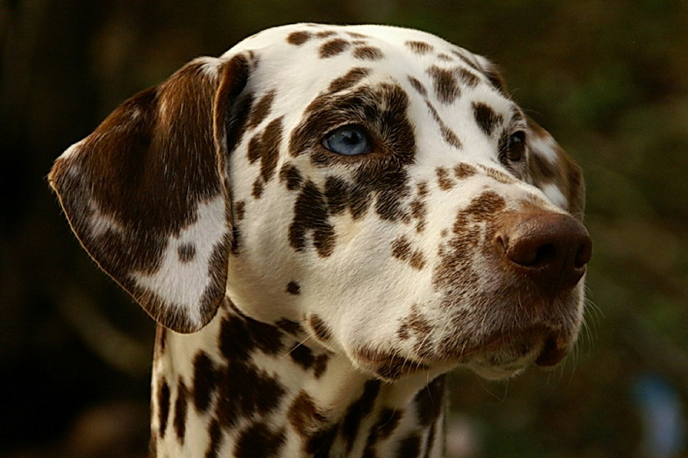
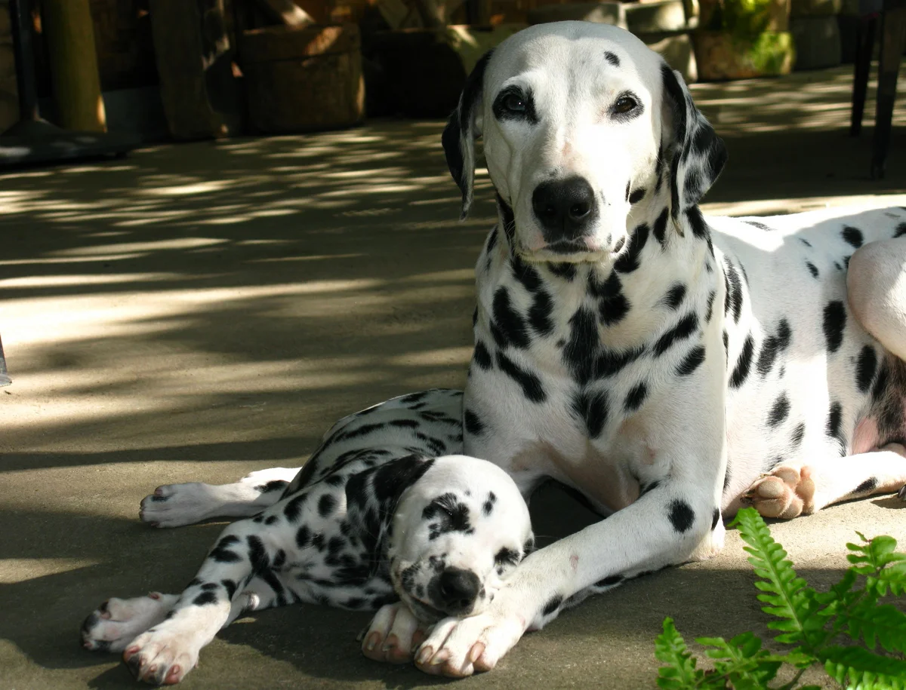
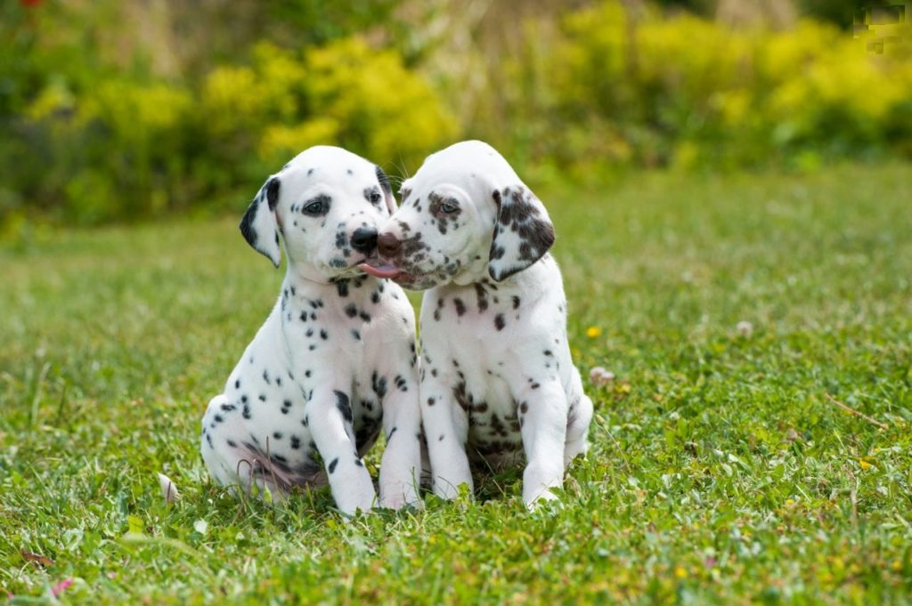
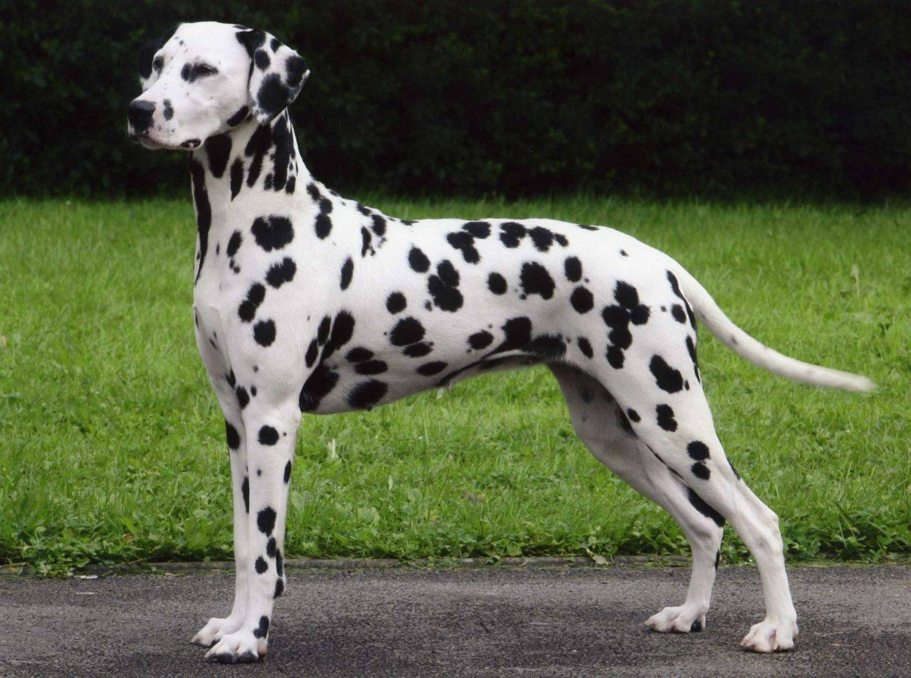

Далматин — достаточно крупная, сильная и выносливая собака, способная преодолевать большие расстояния. Пропорции тела весьма гармоничны. Отношение длины корпуса к высоте в холке составляет 10:9, длина черепа и длина морды 1:1. Темперамент далматина очень уравновешенный.
Подробнее...
Собаки, имеющие в окрасе пятна и очень похожие на современных далматинов, были известны ещё в древние времена, например, археологические раскопки в Греции позволили увидеть разнообразные картины, на которых, наряду с людьми, были изображены очень похожие на современных далматинов собаки. А это значит, что далматины существуют уже несколько тысячелетий[источник не указан 1351 день]. Далматины — достаточно активные собаки, требующие больших нагрузок и долгих прогулок на свежем воздухе.
Скрыть...
- 
- 
- 
- 